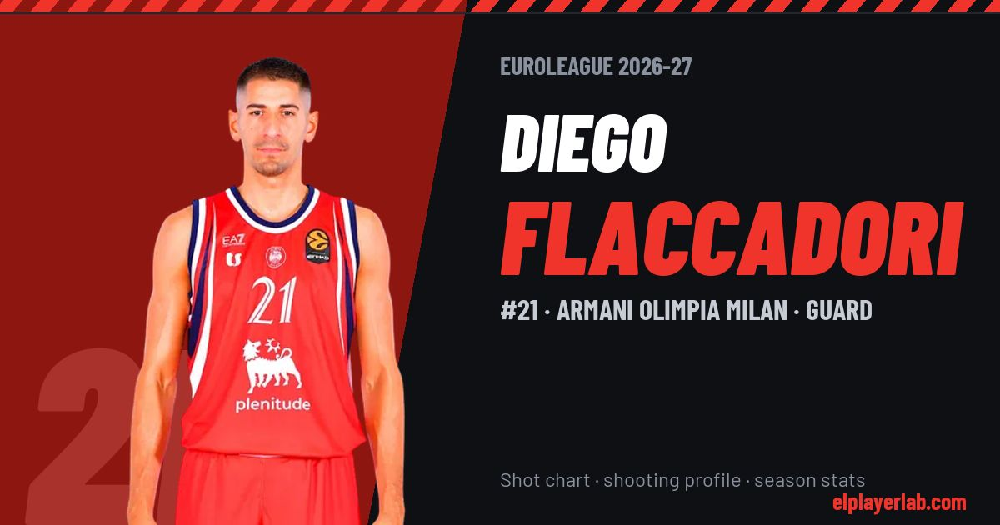

Armani Olimpia Milan · Euroleague 2026-27
Diego Flaccadori
#21 · Guard · Armani Olimpia Milan · 2026-27 · 1 games · 0.0 pts · 0.0 reb · 0.0 ast a game

- Number
- 21
- Position
- Guard
- Height
- 193 cm
- Weight
- 80 kg
- Born
- 1996-04-05
- Country
- Italy
Career
- Milan 2023-2027
- Aquila Trento 2022-2023
- Aquila Trento (loan) 2021-2022
- Bayern Munich 2019-2021
- Aquila Trento 2014-2019
Euroleague Player Lab: shot charts, shooting profiles and season stats for every player, rebuilt after every game.